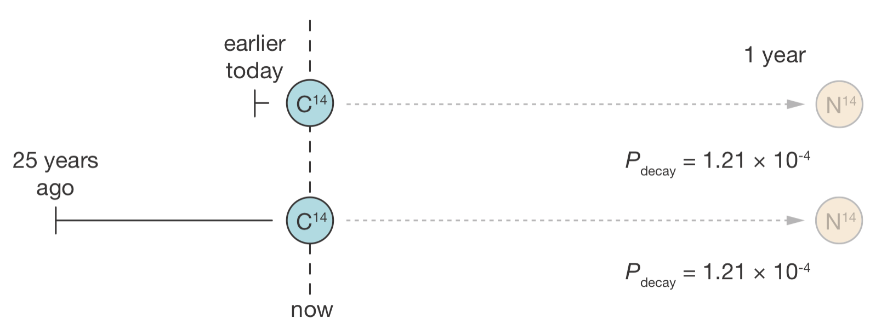
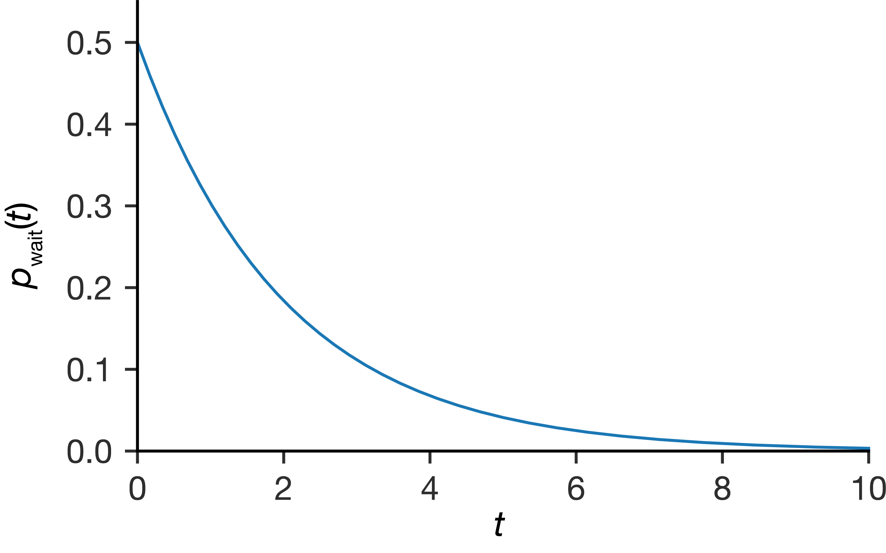
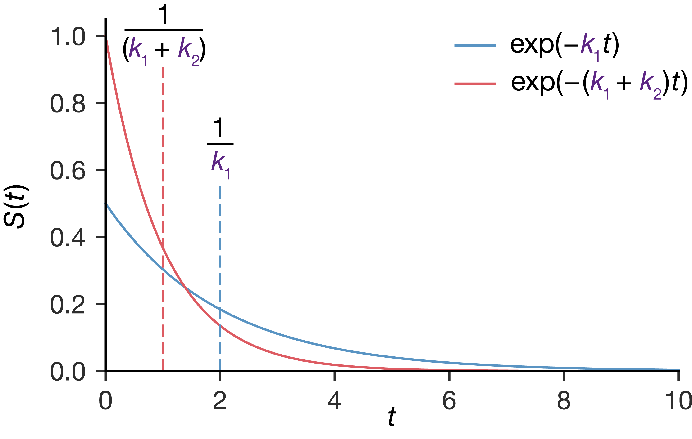
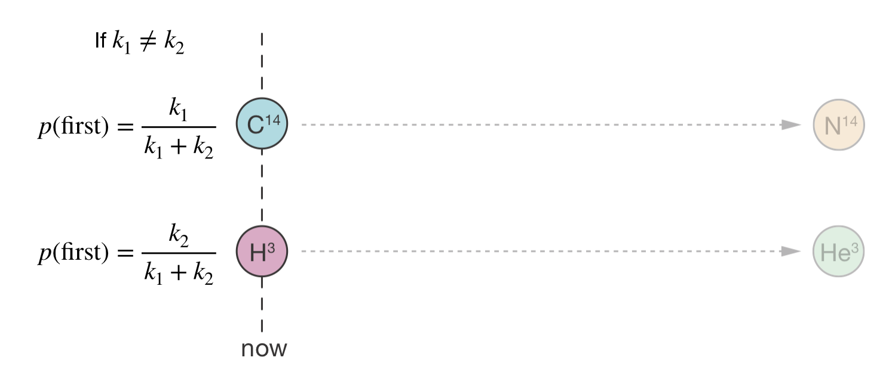
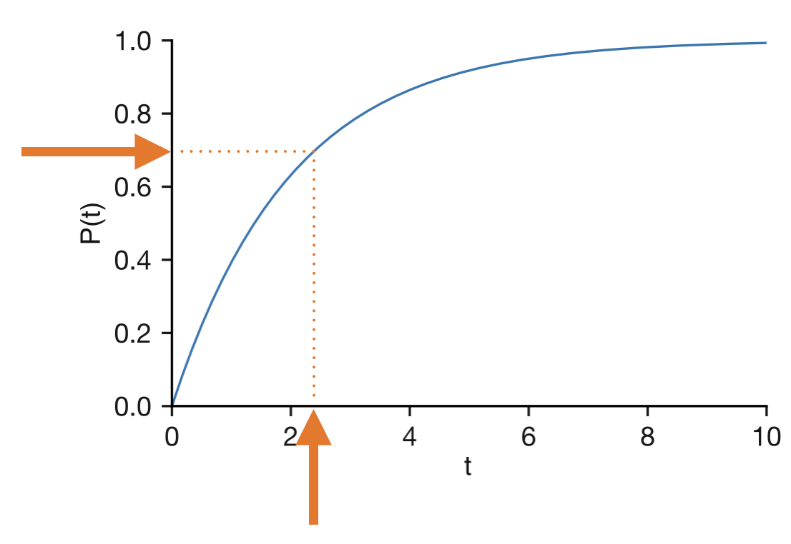
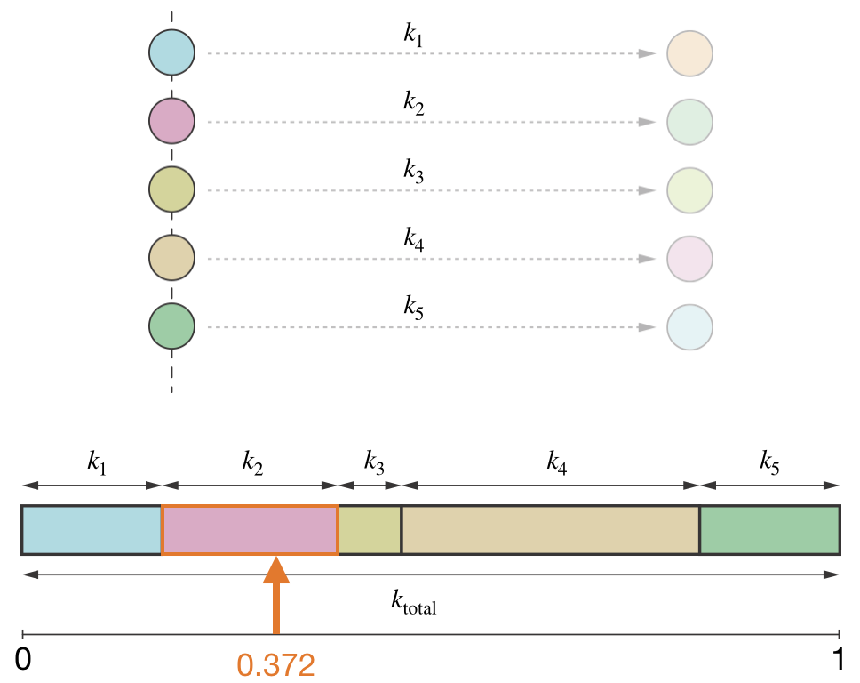
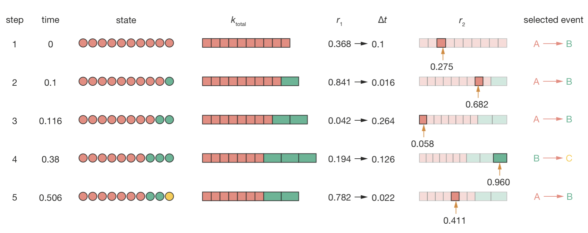
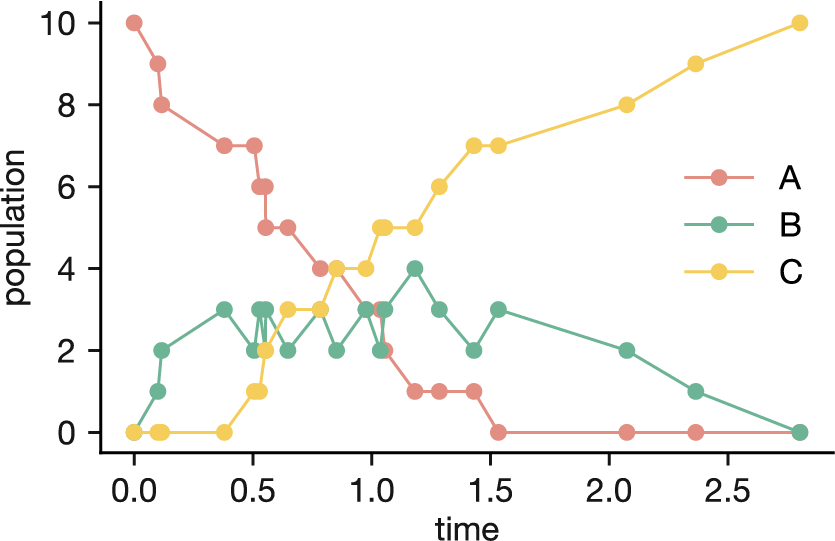

Lecture 4 Kinetic Monte Carlo
4.1 Introduction
In Lectures 2 and 3, we developed the Metropolis Monte Carlo method for estimating thermodynamic properties by sampling from the Boltzmann distribution. But many chemical questions centre on dynamics rather than equilibrium. How quickly does a protein fold? How do atoms diffuse across a catalyst surface? What is the rate-limiting step in a complex reaction mechanism?
One natural approach to dynamics is molecular dynamics (MD), which integrates Newton’s equations of motion. But what if we cannot calculate forces—for example, in a system of discrete states? What if the dynamics are so slow that MD becomes trapped in one energy basin and never samples the rare events we are interested in?
Kinetic Monte Carlo (KMC) provides an alternative. Like Metropolis MC, it uses random numbers to generate a stochastic sequence of states. But where Metropolis MC has no physical time (moves are proposed and accepted or rejected based on energy differences, and the sequence of configurations has no temporal meaning), KMC operates with an explicit physical time. Each move corresponds to a physical event: an atom hopping to a neighbouring site, a molecule adsorbing onto a surface, a bond breaking.
At each step, the algorithm must do two things: select which event happens next, and advance the clock by the appropriate amount. This raises two questions. First, given a set of possible next events, each with its own rate constant, how do we choose which one occurs? And second, how long do we expect to wait before the next event occurs?

Figure 4.1: Dynamic processes on a catalyst surface: molecules adsorb from the gas phase, diffuse between neighbouring surface sites, react with other adsorbed species, and desorb back into the gas phase. Modelling these dynamics with MD would require simulating every atomic vibration across the entire surface—computationally prohibitive for the long timescales over which these events occur. By treating each process as a discrete event with its own rate constant, KMC can model the dynamics efficiently.
4.2 The Memoryless Property: Lightbulbs and Radioactive Nuclei
Let us start with the first question: if two or more events might happen next, which one actually occurs? We cannot know in advance—the outcome is inherently stochastic—so we describe it with a probabilistic model. But what determines the relative probabilities that event A happens before event B? To answer this, we first need to understand how individual random events are distributed in time.
Imagine we are quality assurance inspectors for a manufacturer of high-quality lightbulbs rated to last 10 years. Part of our job involves annual home inspections to assess the likelihood of bulbs failing in the coming year, replacing any that exceed our risk threshold.
On a typical inspection day, we visit two houses:
- In the first house, the lightbulbs were installed just 2 years ago.
- In the second house, the lightbulbs were installed 12 years ago, already exceeding their 10-year rating.
Which lightbulb would we think is more likely to fail before our next inspection? Most people would say the 12-year-old bulb, and they would be correct—lightbulbs “age,” meaning their failure rate increases with time.
Now consider a similar situation with radioactive nuclei:
We are observing two carbon-14 nuclei. Based on its rate constant (corresponding to a half-life of 5,730 years), we calculate there is roughly a 0.012% chance that a carbon-14 nucleus will decay in any given year.
A colleague then tells us: “I’ve been watching one of these nuclei for the past 25 years, and it hasn’t decayed yet. The other nucleus was only added to our experiment this morning.”
Should we update our probability estimate for either nucleus decaying in the next year?
The answer is no. Both nuclei still have exactly the same 0.012% chance of decaying in the next year, regardless of how long they have already been observed. Unlike lightbulbs, radioactive nuclei do not “age” or get closer to decaying with time.

Figure 4.2: The memoryless property of radioactive decay. Two carbon-14 nuclei—one observed since earlier today, the other since 25 years ago—have exactly the same probability of decaying in the next year. Their history is irrelevant.
This property—that future behaviour depends only on the current state, not on past history—defines what mathematicians call a “memoryless” process. For radioactive decay, this means the nucleus has a constant probability of decaying in any small time interval, regardless of how long it has already existed.
4.3 From Memoryless Processes to Exponential Distributions
For memoryless processes like radioactive decay, how long will we wait until the next event?
The probability of an event occurring between time \(t\) and \(t + \Delta t\) depends on two factors: the event must not have already occurred, and, given that it has not, it must occur in the next \(\Delta t\).
The probability that the event has not occurred by time \(t\) is called the survival probability, \(S(t)\). At \(t = 0\) the event has certainly not happened, so \(S(0) = 1\), and \(S(t)\) can only decrease over time—once an event has happened, it cannot un-happen. We do not yet know the functional form of \(S(t)\), but we will see below that the memoryless property determines it.
For a memoryless process, the second factor—the probability of the event occurring in the next \(\Delta t\), given that it has not yet occurred—is constant (this is what it means to be memoryless). For sufficiently small \(\Delta t\), this probability is approximately proportional to \(\Delta t\): we write it as \(k\,\Delta t\), where \(k\) is the rate constant. This approximation becomes exact in the limit \(\Delta t \to 0\).
Multiplying these two factors gives the probability of waiting until time \(t\) and then seeing the event occur—the waiting time distribution:
\[p_\mathrm{wait}(t)\,\Delta t \approx S(t) \times k\,\Delta t \tag{4.1}\]
If the event occurs at time \(t\), it cannot occur again later, so \(p_\mathrm{wait}(t)\,\Delta t\) is also the decrease in \(S\) over the interval \(\Delta t\):
\[\Delta S_{t \to t+\Delta t} \approx -S(t) \times k\,\Delta t\]
In each interval, \(S\) decreases by an amount proportional to itself. Taking the limit \(\Delta t \to 0\), we obtain an exact differential equation:
\[\frac{\mathrm{d}S}{\mathrm{d}t} = -kS(t)\]
The solution to this differential equation is:
\[S(t) = \exp(-kt)\]
The survival probability decays exponentially—this might look familiar. An exponential is defined by the property that it changes at a rate proportional to its current value, and appears anywhere we have constant proportional scaling (for example, first-order chemical kinetics).
Substituting \(S(t) = \exp(-kt)\) back into Equation (4.1) gives the waiting time distribution \(p_\mathrm{wait}(t) = k\exp(-kt)\). This is the same exponential shape, scaled by \(k\).

Figure 4.3: The exponential waiting time distribution \(p_\mathrm{wait}(t) = k\exp(-kt)\). Short waiting times are most probable, with probability density highest at \(t = 0\) and decaying exponentially.
Looking at the shape of this distribution, the probability density is highest at \(t = 0\) and decreases monotonically: counterintuitively, the most probable time for the event to occur is right at the start of our observation. The average waiting time is \(1/k\) (see Appendix B), but individual waiting times are spread widely around this average. Some events occur almost immediately, while others take many multiples of the average time—the distribution only reaches zero as \(t \to \infty\), so there is always a finite probability of waiting longer. This spread is an inherent feature of exponential processes, not a sign of poor statistics.
4.4 Two Competing Radioactive Decays
We now have the tools to return to the questions posed in the introduction: given two or more possible events, which one happens next, and how long do we wait? Let us make this concrete with two radioactive nuclei sitting side by side: a carbon-14 atom with decay constant \(k_1\) and a tritium (hydrogen-3) atom with decay constant \(k_2\). Each decay is a memoryless process with its own exponential waiting time distribution. Which nucleus is likely to decay first, and how long will we wait until one of them does?
For neither nucleus to have decayed by time \(t\), both must have survived until that time. Using the survival probability we just derived, and since the nuclei decay independently, the total survival probability is the product of their individual survival probabilities:
\[S_\mathrm{total}(t) = S_1(t) \times S_2(t) = \exp(-k_1t) \times \exp(-k_2t) = \exp(-(k_1 + k_2)t)\]
This is another exponential function, but with rate constant \(k_\mathrm{total} = k_1 + k_2\). The waiting time until the first decay follows an exponential distribution with average waiting time \(1/k_\mathrm{total}\), which is shorter than either nucleus’s individual average lifetime.

Figure 4.4: Two identical processes compete, each with the same rate constant \(k\) (both described by the blue curve). The red curve shows the survival probability when both processes compete, with combined rate constant \(k_\mathrm{total} = 2k\). Dashed lines mark the mean waiting time for each: the expected wait for the first event is shorter than the mean lifetime of either process alone.
The same argument extends to any number of competing processes: for \(N\) independent memoryless events with rate constants \(k_1, k_2, \ldots, k_N\), the total survival probability is \(S_\mathrm{total}(t) = \exp(-(k_1 + k_2 + \ldots + k_N)t)\), and the waiting time until the first event is exponentially distributed with rate \(k_\mathrm{total} = \sum_{i=1}^N k_i\).
We now know how long to expect to wait before something happens. But we still do not know which event occurs.
The probability of each event being next is proportional to its rate constant (a full derivation is given in Appendix C). For \(N\) competing events, the probability that event \(j\) occurs next is:
\[P(\text{event $j$ is next}) = \frac{k_j}{k_\mathrm{total}}\]
For our two nuclei, suppose carbon-14 has a decay constant of \(k_1 = 3.8 \times 10^{-12}\) s−1 and tritium has \(k_2 = 1.8 \times 10^{-9}\) s−1. Then:
\[P(\text{C-14 decays first}) = \frac{k_1}{k_1 + k_2} \approx 0.0021 \qquad P(\text{tritium decays first}) = \frac{k_2}{k_1 + k_2} \approx 0.9979\]

Figure 4.5: Two competing decay processes: carbon-14 (\(k_1\)) and tritium (\(k_2\)). Because \(k_2 \gg k_1\), tritium is far more likely to decay first, with probability \(k_2/(k_1 + k_2)\).
4.5 Building the KMC Algorithm
We now have two key results: the waiting time until the next event is exponentially distributed with rate \(k_\mathrm{total} = \sum_i k_i\), and the probability of each event being next is \(k_j / k_\mathrm{total}\). To turn these into a simulation algorithm, we need a way to generate random numbers from each distribution.
4.5.1 Generating Exponentially Distributed Random Times
A computer can easily generate uniform random numbers between 0 and 1, but we need exponentially distributed waiting times. The trick is to transform one into the other.
We already know that the survival probability \(S(\tau) = \exp(-k\tau)\) decreases smoothly from 1 to 0 as \(\tau\) increases. Normally, \(S\) takes a time and returns a probability: “what is the probability of surviving to time \(\tau\)?” But we can run this backwards. Since \(S\) decreases smoothly, every probability between 0 and 1 corresponds to exactly one time. So we can ask the inverse question: “given a probability \(r\), at what time does the survival probability equal \(r\)?” Setting \(S(\tau) = r\) and solving:
\[ \begin{align} \exp(-k\tau) &= r \\ \tau &= -\frac{\ln(r)}{k} \end{align} \]
If we feed in a random number \(r\) uniformly distributed between 0 and 1, the resulting \(\tau\) is automatically distributed according to the correct exponential waiting time distribution. This is called “inverse transform sampling”—we are sampling random times by inverting the survival probability function. Small values of \(r\) correspond to long waiting times (the event takes a while to happen, so survival is low), while values close to 1 give short ones. Most random numbers fall near the middle of the range, producing waiting times near the average \(1/k\), but occasional values close to zero give the rare long waits that are characteristic of exponential processes.

Figure 4.6: Inverse transform sampling. A uniform random number \(r\) (y-axis) is mapped through the survival probability curve to produce an exponentially distributed waiting time \(\tau\) (x-axis).
In practice, most scientific computing libraries implement this transformation internally. In Python, for example, np.random.exponential(1/k) generates an exponentially distributed random number with rate parameter \(k\).
4.5.2 Selecting Which Event Occurs
We already know that event \(j\) should be selected with probability \(k_j / k_\mathrm{total}\). How do we turn a single uniform random number into this weighted choice?
The idea is to divide the interval from 0 to 1 into segments, one for each possible event, where the width of each segment is proportional to that event’s rate constant. Event 1 gets the segment from 0 to \(k_1/k_\mathrm{total}\), event 2 gets from \(k_1/k_\mathrm{total}\) to \((k_1 + k_2)/k_\mathrm{total}\), and so on until the segments fill the whole interval. We then generate a uniform random number \(s\) between 0 and 1 and check which segment it lands in—that is the event we select. Events with larger rate constants occupy wider segments and are therefore selected more often, exactly in proportion to their rates.

Figure 4.7: Event selection in KMC. The interval from 0 to 1 is divided into segments proportional to each process’s rate constant. A uniform random number \(s\) selects whichever event’s segment it falls into.
4.5.3 The Complete KMC Algorithm
Putting these two pieces together—generating a waiting time and selecting an event—gives us the full KMC algorithm. This is essentially the “Stochastic Simulation Algorithm” published by Daniel Gillespie in 1976 for simulating chemical reaction networks, and is often referred to as the Gillespie algorithm.
Start with the system in a well-defined state and set the clock to \(t = 0\).
Create a catalog of all possible events and their rates. For each site or component in the system, determine what events could happen there and calculate the corresponding rate constant. Sum all the individual rates to get \(k_\mathrm{total}\).
Advance time. Generate a uniform random number \(r_1\) and calculate the waiting time \(\tau = -\ln(r_1)/k_\mathrm{total}\). Advance the clock: \(t = t + \tau\).
Select which event occurs. Generate a second uniform random number \(r_2\) and use the segment method described above to select an event with probability proportional to its rate.
Execute the selected event and update the system. Change the system state according to the selected event, and update the catalog of possible events and their rates. Only events affected by the change need to be recalculated.
Repeat from step 3 until reaching the desired simulation time or end condition.
Notice that the algorithm jumps directly from one event to the next, skipping over all the time in between when nothing happens. This is what makes KMC efficient: rather than simulating every small timestep (most of which would be uneventful), it focuses all its computational effort on the moments when events actually occur. For systems where events are rare, this can be enormously faster than a fixed-timestep approach.
4.6 A Worked Example: Radioactive Decay Chain
To see the algorithm in action, consider a radioactive decay chain where A atoms decay to B atoms, which then decay to C atoms:
\[\mathrm{A} \overset{k_1}\longrightarrow \mathrm{B} \overset{k_2}\longrightarrow \mathrm{C}\]
We start with 10 A atoms, using \(k_1 = 1\) s−1 and \(k_2 = 2\) s−1 (so B atoms decay twice as fast as A atoms). Each individual atom is tracked separately: the total rate at any moment is \(k_\mathrm{total} = k_1 \times N_\mathrm{A} + k_2 \times N_\mathrm{B}\), which changes every time an event occurs.
Let us walk through the first few steps. Initially, all 10 atoms are type A and no B atoms exist, so \(k_\mathrm{total} = 1 \times 10 = 10\) s−1 and the only possible event is \(\mathrm{A} \to \mathrm{B}\). We generate \(r_1 = 0.368\), giving a waiting time \(\tau = -\ln(0.368)/10 = 0.1\) s, and advance the clock to \(t = 0.1\) s. One A atom decays to B, and the system now has 9 A atoms and 1 B atom.
In the second step, the total rate increases to \(k_\mathrm{total} = 1 \times 9 + 2 \times 1 = 11\) s−1, and now two event types compete. We generate \(r_1 = 0.841\), giving a short waiting time of \(\tau = 0.016\) s. For event selection, we generate \(r_2 = 0.682\). The A \(\to\) B segment occupies the range 0 to \(9/11 = 0.818\), and since \(0.682 < 0.818\), another A atom decays.
The simulation continues in this way (Figure 4.8). Most early steps select \(\mathrm{A} \to \mathrm{B}\), since the A atoms outnumber the B atoms and dominate \(k_\mathrm{total}\). The first interesting moment comes at step 4: by now there are 7 A atoms and 3 B atoms, so \(k_\mathrm{total} = 7 + 6 = 13\) s−1 and the B \(\to\) C segment occupies \(6/13 = 46\%\) of the interval. We generate \(r_2 = 0.960\), which falls in the B \(\to\) C segment—the first time a B atom decays to C.

Figure 4.8: The first five steps of a KMC simulation of the decay chain A \(\to\) B \(\to\) C. Each row shows: the current state of the system (red = A, green = B, yellow = C); the total event rate; the random number \(r_1\) and resulting waiting time; the random number \(r_2\) and event selection (coloured bars show the probability segments for each event type); and the selected event.
Running the simulation to completion produces the population dynamics in Figure 4.9. A decays exponentially, B rises and then falls as an intermediate, and C steadily accumulates—exactly the behaviour we would expect from the rate equations. But unlike the smooth curves of a deterministic model, the KMC trajectory is jagged, reflecting the random timing of individual decay events. Each simulation run produces a slightly different trajectory, yet all follow the same general pattern.

Figure 4.9: Population dynamics from a KMC simulation of the decay chain A \(\to\) B \(\to\) C, starting with 10 A atoms (\(k_1 = 1\) s\(^{-1}\), \(k_2 = 2\) s\(^{-1}\)). The jagged trajectories reflect the stochastic timing of individual events.
4.7 When is KMC Appropriate?
Everything we have derived in this chapter rests on the memoryless property: the assumption that each event has a constant probability of occurring per unit time, regardless of history. This is what gave us exponential waiting times, additive rates for competing events, and the simple event-selection rule \(k_j / k_\mathrm{total}\). KMC is therefore suited to systems of first-order processes: discrete states connected by transitions with known rate constants. Surface catalysis (where molecules adsorb, diffuse, react, and desorb), crystal growth, and defect migration in solids are all natural applications.
When does KMC not work? If the dynamics involve continuous motion (atoms vibrating, molecules tumbling through solution), the system does not hop between discrete states, and molecular dynamics is more appropriate. If the relevant rate constants are unknown and cannot be estimated, KMC has nothing to work with. And if the goal is to sample equilibrium properties without caring about dynamics, then Metropolis Monte Carlo is simpler and more efficient, precisely because it does not need to model physical time.
4.8 Summary
Where Metropolis Monte Carlo samples equilibrium configurations, Kinetic Monte Carlo simulates how a system evolves in time. The two methods answer different questions: one asks “what does the equilibrium look like?”, the other asks “what happens next, and when?”
The algorithm uses two random numbers per step: one to generate an exponentially distributed waiting time, another to select which event occurs with probability proportional to its rate. We developed this approach by considering radioactive decay, but the same mathematics applies to any system of first-order processes, from surface reactions and diffusion in solids to crystal growth. And because KMC jumps directly from event to event rather than simulating every timestep, it can efficiently model processes that would be inaccessible to molecular dynamics.
How quickly does a protein fold? How do atoms diffuse across a catalyst surface? What is the rate-limiting step in a complex mechanism? KMC answers these by simulating the sequence and timing of individual events, building up the full kinetic picture from microscopic rate constants.